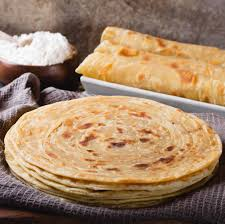

Chapo

Recipe Credit: Jane Mburu
Description
A fluffy tender flatbread originating from India but traveling all the way to East Africa where I first
enjoyed it. Goes great with soups, legumes, and hot beverages.
Ingredients
- Wheat Flour
- Cooking Oil
- Milk
- Sugar
- Salt
Instructions
Prepwork
- Warm a cup of milk or water
- Mix with egg/s, salt, sugar, and oil
- Then stir while adding flour until you can't stir anymore
- Knead the dough until it stops sticking to your hands
- Add a bit of oil and continue kneading
- Cover the dough and let it rest for 1+ hour
Cooking
- Divide dough into balls about the size of cupping your hand
- Roll each ball, apply oil and spread it, then fold it up like a cinnamon roll
- Roll each dough again and spread it
- Take the dough spread out into a big circle and place them on the pan
- Put oil into pan and put the dough or put dough and flip it over and put oil while cooking
- Cook on medium heat until golden brown
- Enjoy!
Back to Recipes